Authority Boundary
1.1.1 and 1.1.3 completion language remains held. 1.1.2 preserves only the previously reviewed local, non-summative completion-language authority. Product-route adoption, diagnostics, mastery, sequencing, PV, Scale Gate 1, and student/product use remain unauthorized.
Review Task
Judge whether the previous REVISE / hold_for_surface_repair blocker is repaired. Do not close the gate from this lab alone; direct packet comments and a resolution log are still required.
Generated Pages
Repair Evidence
Route Copy Screenshots
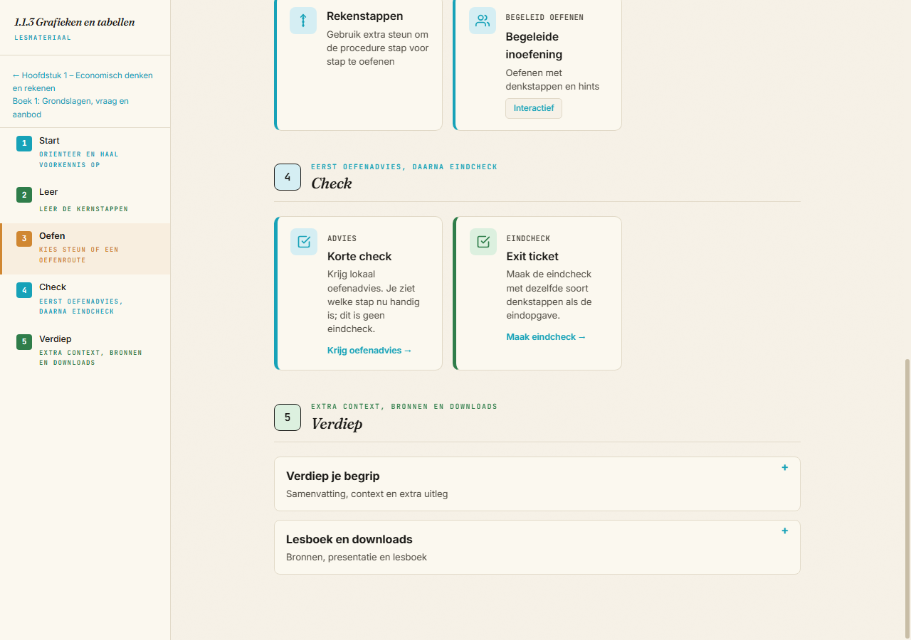
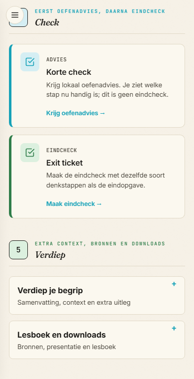
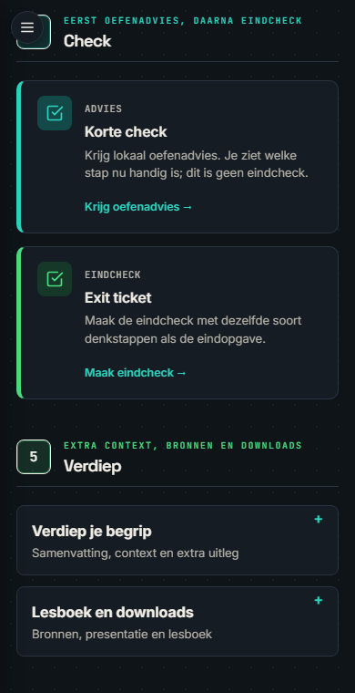
1.1.3 Korte Check Graph/Table Evidence
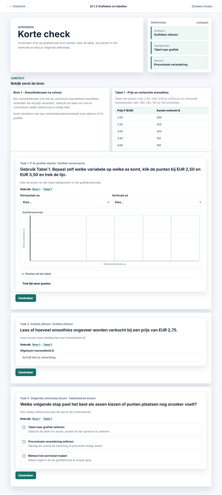
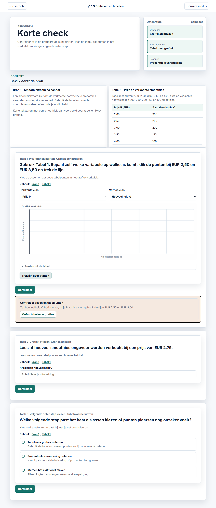
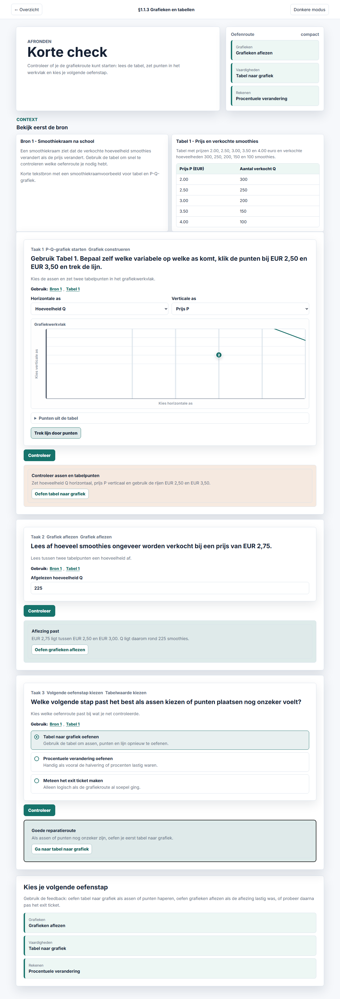
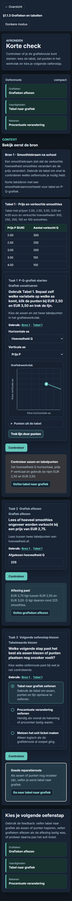
1.1.3 Exit Ticket Source/Task Evidence

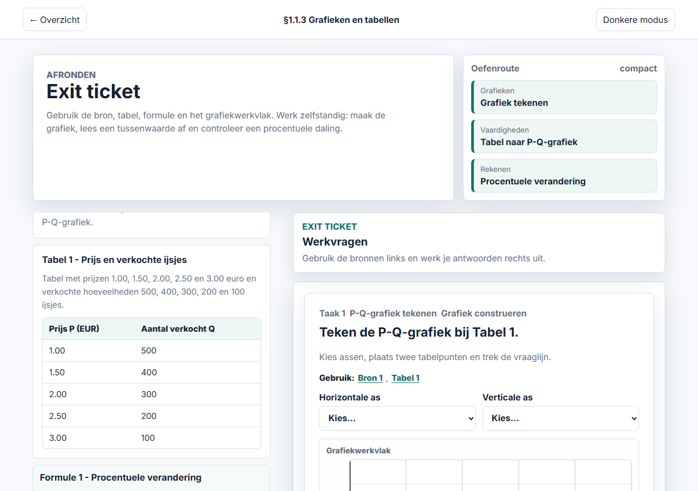
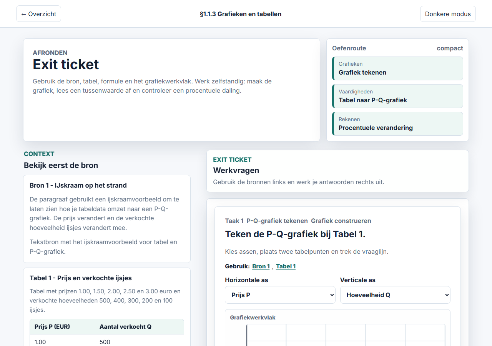
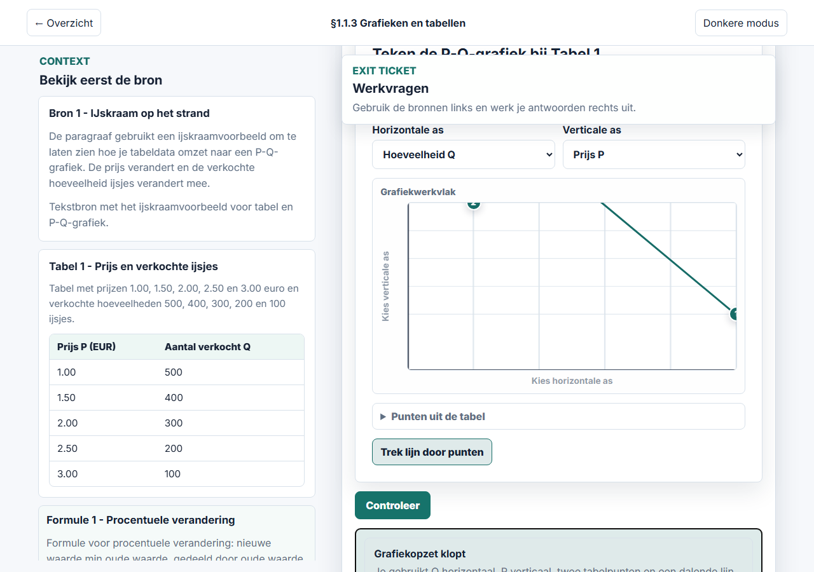
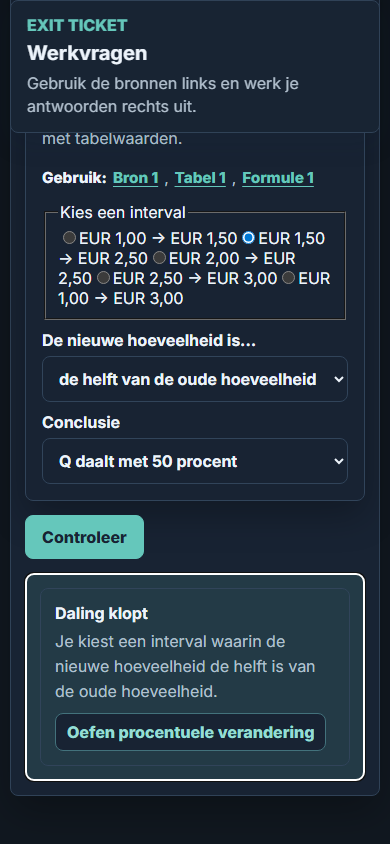